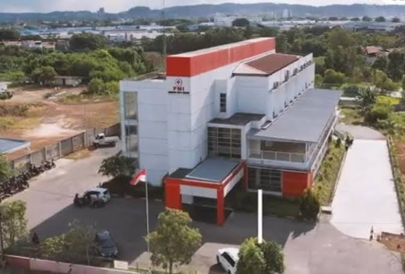

UDD PMI Kota Batam adalah garda terdepan ketersediaan darah aman di Kepulauan Riau. Dengan akreditasi Paripurna, kami melayani 2.200+ kantong darah per bulan untuk seluruh Rumah Sakit di Kota Batam, beroperasi 24 jam dari gedung 2 lantai modern di Jl. Cempaka, Teluk Tering.
Menjadi UDD yang Profesional, Mandiri & Terpercaya di Kepulauan Riau.
Menjamin ketersediaan, keamanan, dan kualitas darah untuk kemanusiaan tanpa henti.

Jl. Cempaka No. 46, Teluk Tering, Batam Kota. Gedung representatif 2 lantai dengan fasilitas donor modern, ruang penyimpanan darah berstandar, dan aula edukasi.
Humanize Note: Setiap kantong darah yang tersedia adalah harapan hidup bagi 3 orang. Terima kasih para pendonor setia Batam.
Catatan Akademik - Aman untuk Sidang: Website ini merupakan prototipe e-katalog kreatif yang dikembangkan sebagai tugas akademik mahasiswa. Seluruh data stok, jadwal, dan foto gedung bersifat ilustratif / diambil dari sumber publik Instagram @upadpmibatam per Oktober 2026 sebagai referensi desain. Bukan website resmi PMI Kota Batam. Untuk informasi resmi, hubungi UDD PMI Kota Batam secara langsung.